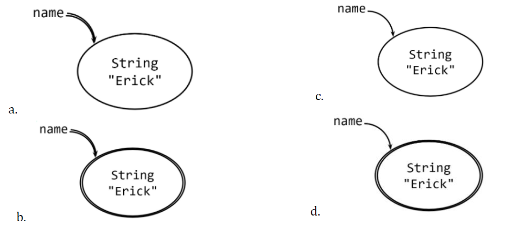

CPT204 Lecture Quiz
This is a collection of CPT204 lecture quizzes.
Lecture notes (theory and concepts) will be updated later on…
Great thanks to my friend Mingzirui Wu for collecting and organizing the questions.
Lecture Quiz 2
Question 1
In the buggy Java code below, is the bug caught by static checking, dynamic checking, or not at all?
1 | int n = 5 ; |
Select one:
a. static checking
b. dynamic checking
c. no checking, resulting in wrong answer
The correct answer is: static checking
Question 2
In the buggy Java code below, is the bug caught by static checking, dynamic checking, or not at all?
1 | int bigNum = 200000 ; // bigNum is 200, |
Select one:
a. static checking
b. dynamic checking
c. no checking, resulting in wrong answer
The correct answer is: no checking, resulting in wrong answer
Question 3
In the buggy Java code below, is the bug caught by static checking, dynamic checking, or not at all?
1 | // the probability of an event is prob = 1/5 = 0. |
Select one:
a. static checking
b. dynamic checking
c. no checking, resulting in wrong answer
The correct answer is: no checking, resulting in wrong answer
Question 4
In the buggy Java code below, is the bug caught by static checking, dynamic checking, or not at all?
1 | int sum = 0 ; |
Select one:
a. static checking
b. dynamic checking
c. no checking, resulting in wrong answer
The correct answer is: dynamic checking
Question 5
In the buggy Java code below, is the bug caught by static checking, dynamic checking, or not at all?
1 | double sum = 7 ; |
Select one:
a. static checking
b. dynamic checking
c. no checking, resulting in wrong answer
The correct answer is: no checking, resulting in wrong answer
Question 6
Which is the correct snapshot diagram for:
1 | final String name = "Erick"; |
Select one:
The correct answer is: b.
Question 7
Choose the incorrect statement:
Select one:
a. String is an immutable type.
b. StringBuilder is a mutable type.
c. final variable cannot be reassigned.
d. object pointed by final variable cannot be mutated.
e. List is a mutable type.
The correct answer is: object pointed by final variable cannot be mutated.
Question 8
When you try to reassign a final variable, Java compiler will produce a compile error.
Therefore, final provides you Answer. a for immutable Answer. b.
Answers:
a. static checking
b. references
Question 9
Rewrite the variable declaration below using Lists instead of arrays:
1 | char[][] matrix; |
The correct answer is:
1 | List<List> matrix; |
Question 10
Given a code:
1 | List<Integer> list1 = new ArrayList<>(); |
choose the correct statement:
Select one:
a. there will be an error, detected by static checking.
b. there will be an error, detected by dynamic checking.
c. there is no error.
The correct answer is: there will be an error, detected by static checking.
Question 11
Given a code:
1 | List<Integer> list1 = new ArrayList<>(); |
choose the correct statement:
Select one:
a. there will be an error, detected by static checking.
b. there will be an error, detected by dynamic checking.
c. there is no error.
The correct answer is: there is no error.
Question 12
Given a code:
1 | List<Integer> list1 = new ArrayList<>(); |
Select one:
a. there will be an error, detected by static checking.
b. there will be an error, detected by dynamic checking.
c. there is no error.
The correct answer is: there is no error.
Question 13
Given a code:
1 | List<Integer> list1 = new ArrayList<>(); |
Select one:
a. there will be an error, detected by static checking.
b. there will be an error, detected by dynamic checking.
c. there is no error.
The correct answer is: there will be an error, detected by dynamic checking.
Question 14
Create a map named hostel with integer keys and string values, to store room number and tenant name pairs. Then, add a key-value pair for a tenant named Alice in room number 777.
Select one:
a.
1 | Map<Integer, String> hostel = new HashMap<>(); |
b.
1 | Map<Integer, String> hostel = new HashMap<>(); |
c.
1 | Map<String, Integer> hostel = new HashMap<>(); |
d.
1 | Map<String, Integer> hostel = new HashMap<>(); |
e.
1 | Map<String, int> hostel = new HashMap<>(); |
f.
1 | Map<String, int> hostel = new HashMap<>(); |
The correct answer is b.
1 | Map<Integer, String> hostel = new HashMap<>(); |
Lecture Quiz 3
Question 1
Somebody wrote a bad code that does not fail fast (from the Lecture 3):
Assume today is January 3, 2019 ;
1 | public static int dayOfYear(int month, int dayOfMonth, int year) { |
which means that the correct dayOfYear for this date is 3,
since it’s the third day of the year.
Now another programmer calls that method with arguments as follows:
1 | dayOfYear(1, 3, 2019) |
Choose the correct statement:
Select one:
a. The programmer did not make a mistake. The method gave the right answer.
b. The programmer made a mistake. The method gave the right answer, luckily.
c. The programmer made a mistake. The method gave the wrong answer, quietly.
d. The programmer made a mistake. The method detected a static error.
e. The programmer made a mistake. The method detected a dynamic error.
The correct answer is:
a. The programmer did not make a mistake. The method gave the right answer.
Question 2
Now another programmer calls that method with arguments as follows:
1 | dayOfYear(0, 3, 2019) |
Choose the correct statement:
Select one:
a. The programmer did not make a mistake. The method gave the right answer.
b. The programmer made a mistake. The method gave the right answer, luckily.
c. The programmer made a mistake. The method gave the wrong answer, quietly.
d. The programmer made a mistake. The method detected a static error.
e. The programmer made a mistake. The method detected a dynamic error.
The correct answer is:
b. The programmer made a mistake. The method gave the right answer, luckily.
Question 3
Now another programmer calls that method with arguments as follows:
1 | dayOfYear(3, 1, 2019) |
Choose the correct statement:
Select one:
a. The programmer did not make a mistake. The method gave the right answer.
b. The programmer made a mistake. The method gave the right answer, luckily.
c. The programmer made a mistake. The method gave the wrong answer, quietly.
d. The programmer made a mistake. The method detected a static error.
e. The programmer made a mistake. The method detected a dynamic error.
The correct answer is:
c. The programmer made a mistake. The method gave the wrong answer, quietly.
Question 4
Now another programmer calls that method with arguments as follows:
1 | dayOfYear("January", 3, 2019) |
Choose the correct statement:
Select one:
a. The programmer did not make a mistake. The method gave the right answer.
b. The programmer made a mistake. The method gave the right answer, luckily.
c. The programmer made a mistake. The method gave the wrong answer, quietly.
d. The programmer made a mistake. The method detected a static error.
e. The programmer made a mistake. The method detected a dynamic error.
The correct answer is:
d. The programmer made a mistake. The method detected a static error.
Question 5
Now another programmer calls that method with arguments as follows:
1 | dayOfYear (2019, 1, 3) |
Choose the correct statement:
Select one:
a. The programmer did not make a mistake. The method gave the right answer.
b. The programmer made a mistake. The method gave the right answer, luckily.
c. The programmer made a mistake. The method gave the wrong answer, quietly.
d. The programmer made a mistake. The method detected a static error.
e. The programmer made a mistake. The method detected a dynamic error.
The correct answer is:
c. The programmer made a mistake. The method gave the wrong answer, quietly.
Question 6
We should not use global variables. Making a variable into a constant can eliminate the risk of global variables.
What keyword should be added to such global variables to make them constants?
The correct answer is: final
Question 7
In the 1990s, the Ariane 5 launch vehicle, designed and built for the European Space Agency, self-destructed 37 seconds after its first launch.
The reason was a control software bug that went undetected. The Ariane 5’s guidance software was reused from the Ariane 4, which was a slower rocket. When the velocity calculation converted from a 64 - bit floating point number (a double in Java terminology, though this software wasn’t written in Java) to a 16-bit signed integer (a short), it overflowed the small integer and caused an exception to be thrown.
The exception handler had been disabled for efficiency reasons, so the guidance software crashed. Without guidance, the rocket crashed too. The cost of the failure was $1 billion.
What ideas does this story demonstrate?
Choose the correct option.
Select one:
a. High-quality safety-critical software cannot have residual bugs.
b. Testing all possible inputs is the best solution to this problem.
c. Static checking could have detected this bug.
d. Software exhibits discontinuous behavior, unlike many physically-engineered systems.
The correct answer is:
Software exhibits discontinuous behavior, unlike many physically-engineered systems.
Question 8
Consider the following specification:
1 | /** |
Which of the following is the best partitions for the start parameter?
Select one:
a. start = 0, 0 < start < text.length(), start = text.length()
b. start = 0, start = 5, start = 100
c. start < 0, start = 0, start > 0
d. start < text.length(), start = text.length(), start > text.length()
The correct answer is: start = 0, 0 < start < text.length(), start = text.length()
Question 9
Which of the following is the best partitions for the text parameter?
1 | /** |
Select one:
a. text.length() = 0; text.length()-start is odd; text.length()-start is even
b. text contains some letters; text contains no letters, but some numbers; text contains neither letters nor numbers
c. text.length() < 0; text.length() = 0; text.length() > 0
d. text is every possible string from length 0 to 100
The correct answer is: text.length() = 0; text.length()-start is odd; text.length()-start is even
Question 10
Select the incorrect statement about Covering the Partitions:
Select one:
a. For the BigInteger multiply example, using cover each part approach, we can choose 5 test cases.
b. The full cartesian approach may not be the best because it could produce too many and redundant test cases.
c. The cover each part approach may not be the best because the function may behave differently for a certain combination of inputs.
d. For the max example, using full Cartesian approach, we can choose less than 75 test cases because not all combinations are possible.
The correct answer is: For the BigInteger multiply example, using cover each part approach, we can choose 5 test cases.
Question 11
In designing the test suite for the Recursive Reverse String problem, we include the empty string as a test case.
Which testing principle do we use?
Select one:
a. Choose the boundaries in the partition.
b. Divide the input space into subdomains.
c. Choose one test case from each subdomain.
d. Choose one test case from every legal combination of the partition.
The correct answer is: Choose the boundaries in the partition.
Question 12
When you write the recursive step of your recursive method, which part of your code that must be reached by it?
The correct answer is: the base case
Question 13
In solving a problem recursively, you can define a/an Answer.A that uses an arbitrary number of
parameters.
The correct answer is: A. Helper Method
Lecture Quiz 4
Question 1
Using your favorite code coverage tool, you add test cases one-by-one, until all reachable statements in
your code have been executed at least once.
Which coverage guarantee your code has now?
Select one:
a. Statement coverage
b. Branch coverage
c. Path coverage
d. Unit coverage
The correct answer is: Statement coverage
Question 2
Consider the following method:
1 | /** |
Which test case of the following test cases are likely to be a boundary value produced by white box testing?
Select one:
a. [9, 8, 7, 6, 5, 4, 3, 2, 1, 0]
b. the empty list
c. [0, 0, 1, 0, 0, 0, 0]
d. [1, 2, 3]
The correct answer is: [9, 8, 7, 6, 5, 4, 3, 2, 1, 0]
Question 3
After fixing a bug that caused test case x fail,
you need to rerun all your JUnit tests, not just test case x.
Select one:
a. True
b. False
The correct answer is ‘True’.
Question 4
Which one of these testing activities follows the principle of regression testing?
Select one:
a. Changes should be tested against all inputs that induced bugs in earlier versions of the code
b. Every component in your code should have an associated set of tests that exercises all the corner cases in its specification
c. Tests should be written before you write the code as a way of checking your understanding of the specification
d. When a new test exposes a bug, you should run it on all previous versions of the code until you find the version where the bug was introduced
The correct answer is: Changes should be tested against all inputs that induced bugs in earlier versions of the code
Question 5
Which of these techniques are useful for choosing test cases in test-first programming, before any code is written?
Select one or more:
Partitioning
Boundaries
Black box
Regression
Coverage
White box
Integration
The correct answers are:
Partitioning, Boundaries, Black box
Question 6
Choose the correct statement about a regression test case.
Select one:
a. A regression test case comes from the discovery of a bug
b. A regression test case is chosen from the partitions
c. A regression test case can come out of black-box testing
d. A regression test case can come out of white-box testing
The correct answer is: A regression test case comes from the discovery of a bug
Question 7
As a temporary substitute for a method that is not yet to be developed, you write a code to simulate the method’s functionality.
The method can then be called by another method that you want to test. Such method is called a/an Answer.
The correct answer is: unit
Question 8
Which button to click to get the Java Visualizer run the next line of your code and show the subsequent visualization?
Select one:
a. Step Into
b. Step Over
c. Step Out
d. Step Off
e. Step On
The correct answer is: Step Into
Question 9
Write one line of Java code that declares a MyList pointer named p and initializes it to the current MyList object.
Do not forget to end it with a semicolon.
The correct answer is:
1 | MyList p = this; |
Question 10
1 | MyList3 list = new MyList3( 100 , null ); |
What is the println result of:
The correct answer is: 300
Lecture Quiz 5
Question 1
Consider the two methods to find the value val in an integer array a below. (T or F)
1 | static int findFirst(int[] a, int val) { |
If clients only care about calling the find method when they know that val always occurs exactly once in a, findFirst and findLast are behaviorally equivalent.
The correct answer is ‘True’.
Question 2
Consider the two methods to find the value val in an integer array a below. (T or F)
1 | static int findFirst(int[] a, int val) { |
Question 3
Suppose we’re working on the method below:
1 | /** |
Which one is a part of the postcondition of scrabble?
Select one:
a. scrabble returns a list of strings
b. tiles has only uppercase letters
c. crossings has no duplicates
d. scrabble takes two arguments
The correct answer is: scrabble returns a list of strings
Question 4
Suppose we’re working on the method below:
1 | /** |
Which one is not a part of the precondition of scrabble?
Select one:
a. scrabble returns an empty ArrayList
b. tiles has length 7
c. crossings is a string of uppercase letters
d. scrabble’s arguments are of type String and String
The correct answer is: scrabble returns an empty ArrayList
Question 5
Suppose we’re working on the method below:
1 | /** |
Which one is the part of the spec that are checked statically by Java?
Select one:
a. scrabble takes two arguments
b. tiles is a string of uppercase letters
c. crossings has no duplicates
d. when tiles.length() != 7, scrabble throws a RuntimeException
The correct answer is: scrabble takes two arguments
Question 6
Which of the following is not part of a method’s specification?
Select one:
a. restrictions on used data types
b. return type
c. restrictions on return values
d. number of arguments
e. argument types
f. restrictions on argument values
The correct answer is: restrictions on used data types
Question 7
Alice writes the following code:
1 | public static int gcd(int a, int b) { |
Bob writes the following test:
1 |
|
Which of the following statement is incorrect?
Select one:
a. If Alice adds a > 0 to the precondition, Bob should test negative values of a
b. If Alice does not add a > 0 to the precondition, Bob should test negative values of a
c. Alice should write a > 0, b > 0 in the precondition of gcd
d. Alice should not write a and b are integers in the precondition of gcd
The correct answer is: If Alice adds a > 0 to the precondition, Bob should test negative values of a
Question 8
Given the following specification:
1 | static int find(int[] arr, int val) |
Which are the valid test cases for find?
Select one or more:
find([ 1, 2, 3 ], 1) must return 0
find([ 4, 4, 5 ], 4) must return 0
find([ 4, 4, 5 ], 4) must return 1
find([ 6, 7, 8 ], 2) throws an exception
find([ 3 ], 3) must return 0
find([ 4 ], 5) must not return 0
The correct answers are:
find([ 1, 2, 3 ], 1) must return 0, find([ 3 ], 3) must return 0
Question 9
What is a condition that must be preserved and guaranteed to be true during a method’s execution called?
The correct answer is: invariant
Question 10
To allow types such as Integer, String, and user-defined types to be a parameter to methods, classes, and interfaces, we use Answer. Using it, we can create classes that work with different data types.
The correct answer is: generic
Lecture Quiz 6
Question 1
Which of the following cannot be null?
Select one or more:
1 | char c; |
The correct answers are:
1 | char c;, |
Question 2
Given the following code:
1 | public static String nope() { |
Which line contains a static error? ((1) to (6))
The correct answer is: (6)
Question 3
Given the same code from Question 2 above:
1 | public static String nope() { |
Suppose you have commented out the line causing the static error in Question 2.
Now, which line contains a dynamic error? ((1) to (6))
The correct answer is: (4)
Question 4
Suppose we’re building a robot and we want to specify the method
1 | public static List findPath(Point initial, Point goal) |
which is responsible for path-finding: determining a sequence of Points that the robot should move through to navigate from initial to goal, past any obstacles that might be in the way.
In the postcondition, we say that findPath will search for paths only up to a bounded length (set elsewhere), and that it will throw an exception if it fails to find one.
Which exception is the best exception and its type to create, according to Lecture 6?
Select one:
a. a checked PathNotFoundException
b. an unchecked PathNotFoundException
c. a checked NoPathException
d. an unchecked NoPathException
The correct answer is: a checked PathNotFoundException
Question 5
Suppose we define a checked exception for the method findPath.
1 | public static List findPath(Point initial, Point goal) |
What will we choose as our superclass?
Select one:
a. Exception
b. Throwable
c. Error
d. RuntimeException
The correct answer is: Exception
Question 6
Suppose we define an unchecked exception for the method findPath.
1 | public static List findPath(Point initial, Point goal) |
What will we choose as our superclass?
Select one:
a. Exception
b. Throwable
c. Error
d. RuntimeException
The correct answer is: RuntimeException
Question 7
Consider this code below for analyzing some Thing objects:
1 | static List<Thing> allTheThing; |
Note that IndexOutOfBoundsException, NullPointerException, and OutOfMemoryError are unchecked exceptions;
and AnalysisException is a checked exception.
Which exception could be thrown by a call to analyzeEverything?
Select one or more:
AnalysisException
IndexOutOfBoundsException
NullPointerException
OutOfMemoryError
The correct answers are:
IndexOutOfBoundsException, NullPointerException, OutOfMemoryError
Question 8
If we want to construct a different object with the same values as the input object, we use a/an Answer.A
that performs a/an Answer.B instead of a shallow copy.
The correct answers are:
A. copy constructor
B. deep copy
Question 9
Write one line of Java code that throws an IllegalArgumentException object with a message “n must not
be even” to complete the if statement below:
1 | if (n % 2 == O) { |
Do not forget to end it with a semicolon.
The correct answer is:
1 | throw new IllegalArgumentException("n must not be even"); |
Question 10
When we throw an IllegalArgumentException object within a method, that method must advertise it in
the method signature. (T or F)
The correct answer is ‘False’.
Lecture Quiz 8
Question 1
Consider the following implementation:
1 | static int findFirst(int[] arr, int val) { |
and this specification of find:
1 | static int find(int[] arr, int val) |
Which inputs demonstrates that findFirst does not satisfy this spec?
Select one or more:
[ 1, 2, 2 ], 2
[ 1, 2, 3 ], 2
[ 1, 2, 3 ], 4
none of all others,
findFirst does satisfy this spec!
The correct answers are:
[ 1, 2, 2 ], 2
[ 1, 2, 3 ], 4
Question 2
Consider the following implementation:
1 | static int findlast(int[] arr, int val){ |
and this specification of find:
1 | static int find(int[] arr, int val) |
Which inputs demonstrates that findFirst does not satisfy this spec?
Select one or more:
[ 1, 2, 2 ], 2
[ 1, 2, 3 ], 2
[ 1, 2, 3 ], 4
none of all others,
findFirst does satisfy this spec!
The correct answer is: none of all others, findLast does satisfy this spec!
Question 3
For each spec below, which one is not deterministic (underdetermined)?
Select one:
a.
1 | static int find(int[] arr, int val) |
b.
1 | static int find(int[] arr, int val) |
c.
1 | static int find(int[] arr, int val) |
d.
1 | static int find(int[] arr, int val) |
The correct answer is a.
Question 4
Given this specification:
1 | static String join (String delimiter, String[] elements) |
Rewrite the spec so it is declarative, not operational.
Select one:
a.
1 | effects: returns elements joined together with copies of delimiter, i.e. |
b.
1 | effects: returns the result of adding all elements to a |
c.
1 | effects: returns the result of looping through elements and |
d.
1 | effects: returns the result of recursive calls on the elements and |
The correct answer is a.
Question 5
When a specification is strengthened:
Select one:
a. fewer implementations satisfy it, and more clients can use it
b. fewer implementations satisfy it, and fewer clients can use it
c. more implementations satisfy it, and fewer clients can use it
d. more implementations satisfy it, and more clients can use it
The correct answer is: fewer implementations satisfy it, and more clients can use it
Question 6
Which of the following is false about a pair of specifications A and B?
Select one:
a. A can be stronger than B and have a stronger precondition
b. A can be stronger than B and have a weaker precondition
c. A can be stronger than B and have the same precondition
d. A can be incomparable to B
The correct answer is: A can be stronger than B and have a stronger precondition
Question 7
Here are the find specifications from Lecture 8:

We already know that findOneOrMore , FirstIndex is stronger than findOneOrMore, AnyIndex, which is stronger than findExactlyOne.
Where is findExactlyOne on the diagram?
Select one:
a.

b.

c.

d.

The correct answer is c.
Question 8
We already know that findOneOrMore, FirstIndex is stronger than findOneOrMore, AnyIndex, which is stronger than findExactlyOne.
How does findCanBeMissing compare to findExactlyOne?
Select one:
a. findCanBeMissing is stronger than findExactlyOne
b. findCanBeMissing is weaker than findExactlyOne
c. findCanBeMissing and findExactlyOne are incomparable
d. none of the options is correct
The correct answer is: findCanBeMissing is stronger than findExactlyOne
Question 9
We already know that findOneOrMore, FirstIndex is stronger than findOneOrMore, AnyIndex, which is stronger
than findExactlyOne.
Where is findCanBeMissing on the diagram?
Select one:
The correct answer is d.
Question 10
In our ARList implementation, we use a technique called Answer that doubles the size of the array whenever it is full.
The correct answer is: array doubling.
Question 11
You want to use a generic array using casting in your implementation of a data structure.
For example, you write the following line in your constructor or your method:
1 | T[] elements = (T[]) newObject[numfElements]; |
Write the annotation that you need to write before the constructor or the method:
The correct answer is:
1 |